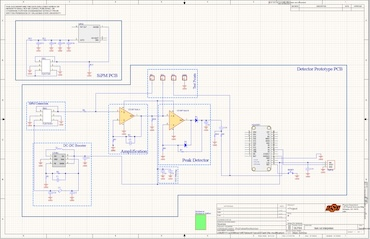
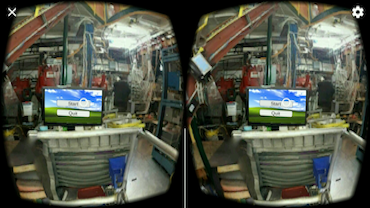
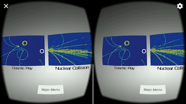
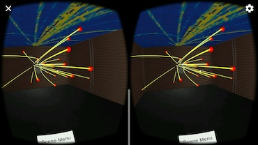
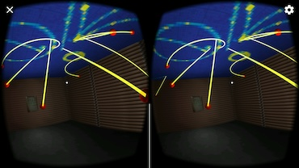

Experience
Currently leading a team of software engineers within the Hardware Development Lab at Oklahoma State University
to oversee the production and testing of critical hardware components for the ATLAS detector upgrade, set to be
operational by 2029. The team has developed an integrated full-stack solution, featuring a robust back-end
infrastructure and a customized front-end interface to optimize the testing processes. This role also involves
implementing advanced machine learning techniques to detect anomalies in visual inspections of production components.
- Spearhead the design and development of a comprehensive testing suite to streamline hardware testing,
ensuring the ATLAS detector upgrade adheres to strict timelines.
- Oversee the creation of scalable back-end infrastructure and user-friendly front-end interfaces to enhance
testing efficiency.
- Extensive hands-on experience with technologies including MongoDB, Kubernetes, Docker, custom APIs, openHTF,
Python, TensorFlow, and PyTorch.
- Present workflows and design technical tutorials for upper management and testing engineers to facilitate
smooth integration and execution.
- Lead the development of machine learning models aimed at accelerating visual inspection processes for
hardware components.
As a primary contributor, I developed a model-agnostic physics analysis technique using unsupervised machine learning,
specifically autoencoder neural networks, to detect anomalies in ATLAS detector data that could signal new physics
beyond the Standard Model. This approach, applied to boosted topologies and rare decays, leverages Run 2 data to define
anomalous regions where novel events may occur. Additionally, I designed the DL1d deep learning tagger, the first of its
kind for the High-Luminosity Large Hadron Collider (HL-LHC), surpassing existing methods like DIPS and MV2 for heavy-flavor
jet tagging. This work includes extensive statistical modeling, utilizing the BumpHunter algorithm to analyze exclusion
limits for new physics signals. From February 2023 to March 2024, I also served as Physics Validation contact for the
Flavour Tagging team, and as the Diversity and Equity Graduate Representative for the Oklahoma State University
Physics Department.
- Anomaly Detection with Autoencoders: You applied autoencoder neural networks, trained on ATLAS Run 2 data,
to identify anomalous events potentially indicative of new physics. This approach aims to detect phase spaces
where non-Standard Model physics may manifest, specifically in boosted topologies and rare particle decays
- Development of DL1d Tagger for HL-LHC: You contributed to the design of the DL1d particle identification
algorithm, a deep learning-based tagger, which will be critical for the upcoming High-Luminosity LHC (HL-LHC).
This model, built upon various training strategies, surpasses traditional taggers like DIPS and MV2 in performance,
particularly for heavy-flavor jets
- Statistical Modeling for BSM Physics: Your work also involved statistical techniques, including the BumpHunter
algorithm, to set exclusion limits on BSM signals using Monte Carlo (MC) simulations
Articles and Outreach
SciTechDaily
AI Breakthrough in Detecting New Particles at the Large Hadron Collider

Argonne National Laboratory
Machine learning could help reveal undiscovered particles within data from the Large Hadron Collider
Elsevier
Machine Learning for Anomaly Detection in Particle Physics

ATLAS Experiment
Outreach video on how Anomaly Detection works
Projects
Currently, I'm designing a pocket sized scalable particle detector used to detect cosmic rays! With its prototype being designed in
Altium Designer. The finsihed product will be available to purchase, so stay tuned!

Preliminary layout of the muon detector

Preliminary schematic of the muon detector
A while back I worked at the Facility for Rare Isotope Beams (FRIB), formally known as the National Superconducting
Cyclotron Laboratory (NSCL). Here, I had the opportunity to work on a few projects. A notable project I created for physics
outreach was to create a virtual reality application that puts the user inside a simulated version of a Time Project Chamber (TPC).
This application used real-world data taken by the Spirit TPC, located in Japan. Two events were simulated, one was using a nuclear
collision on a target and the other used an observed cosmic ray.

The main screen showing a test chamber within the FRIB.

Menu showing the two event choices.

Image of a recreated nuclear collision using a target within the VR environment.

Image of a recreated cosmic ray within the VR environment.
Get In Touch
Feel free to reach out for any collaborations or opportunities!


{kind=link}
{kind=link}
{kind=link}
{kind=link}
{kind=link}